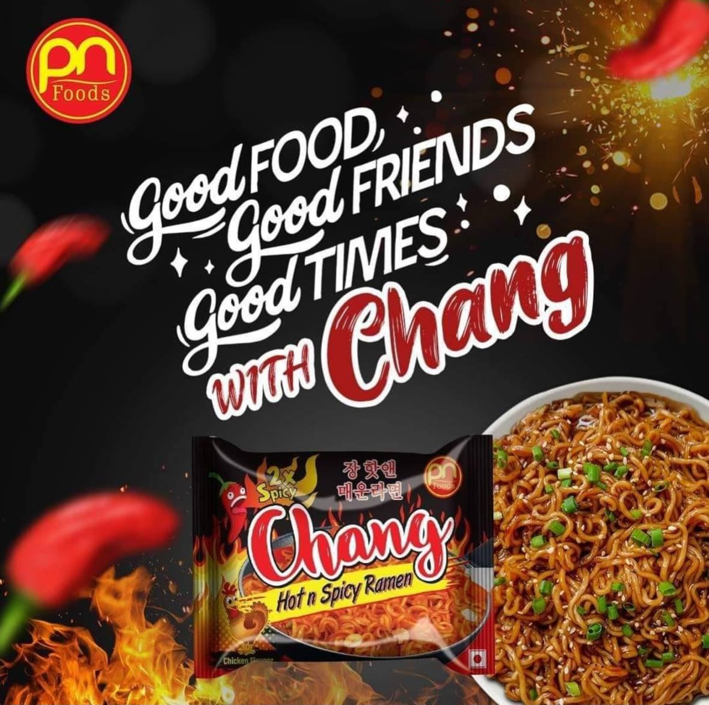

At Prime Noodles , we believe in delivering the finest noodle dishes, inspired by authentic Asian flavors. We’re passionate about making each bowl of noodles a delightful experience! It was established by Father and Daughter with lots of research and hardwork.
In Nepal, noodles are not just food; they represent tradition, culture, and the coming together of families. Popular dishes like **"Thukpa"** and **"Chow Mein"** have been enjoyed for generations, offering a taste of the warmth and hospitality that Nepal is known for. Noodles are often made with love, prepared fresh, and served with various meats, vegetables, and spices to create a deliciously balanced dish.
Our noodle recipes are inspired by these authentic Nepalese noodle dishes, bringing the flavors of Nepal to your table. Whether you're enjoying a hot bowl of **Thukpa** or our signature stir-fried noodles, each dish tells the story of Nepalese cuisine and its rich culinary heritage.
"A bowl of noodles is a bowl of warmth, comfort, and love – it's a true reflection of Nepal's spirit."